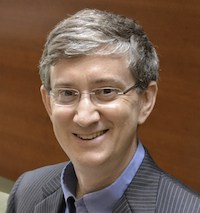
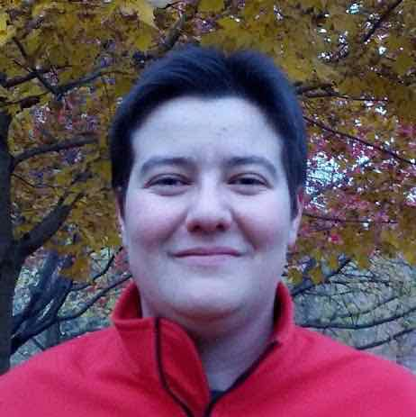

Amit Datta
Amit Datta is a PhD candidate at Carnegie Mellon University. Broadly, his
research interests span privacy and security, with a growing interest in
applications of machine learning for privacy. Most recently, he has been
involved in running information flow experiments on online web services to
detect privacy violations. In particular, he has been studying how browsing
behaviors affect advertisements served later. Datta received his B.Tech from
IIT Kharagpur in 2012, and has worked previously on verifiable secret sharing
and fully homomorphic encryption.
Website »
Short bio »
Anupam Datta
Anupam Datta is an Associate Professor at Carnegie Mellon University where
he holds a joint appointment in the Computer Science and Electrical and
Computer Engineering Departments. His research focuses on the scientific
foundations of security and privacy. Datta's work helped develop the research
area of Privacy through Accountability and contributed towards the research
area of Compositional Security. Datta has authored a book and over 50 other
publications on these topics. He serves as Associate Editor of the Journal of
Computer Security and the Journal of Computer and System Sciences, as well as
the 2013-14 Program Co-Chair of the IEEE Computer Security Foundations
Symposium. Datta obtained Ph.D. (2005) and M.S. (2002) degrees from Stanford
University and a B.Tech. (2000) from IIT Kharagpur, all in Computer
Science.
Website »
Short bio »
Cynthia Dwork
Cynthia Dwork, Distinguished Scientist at Microsoft Research, is renowned for
placing privacy-preserving data analysis on a mathematically rigorous
foundation. A cornerstone of this work is differential privacy, a strong
privacy guarantee frequently permitting highly accurate data analysis. Dr.
Dwork has also made seminal contributions in cryptography and distributed
computing, and is a recipient of the Edsger W. Dijkstra Prize, recognizing
some of her earliest work establishing the pillars on which every
fault-tolerant system has been built for decades. She is a member of the
National Academy of Sciences and the National Academy of Engineering, and a
Fellow of the American Academy of Arts and Sciences.
Website »
Short bio »

Edward Felten
Edward Felten is the Robert E. Kahn Professor of Computer Science and
Public Affairs at Princeton University, and the founding Director of
Princeton's Center for Information Technology Policy. In 2011-12 he served as
the first Chief Technologist at the U.S. Federal Trade Commission. His
research interests include computer security and privacy, especially relating
to media and consumer products; and technology law and policy. He has
published about eighty papers in the research literature, and two books. His
research on topics such as web security, copyright and copy protection, and
electronic voting has been covered extensively in the popular press. His
weblog, at freedom-to-tinker.com, is widely read for its commentary on
technology, law, and policy. He is a member of the National Academy of
Engineering and the American Academy of Arts and Sciences, and is a Fellow of
the ACM. He has testified before the House and Senate committee hearings on
privacy, electronic voting, and digital television. In 2004, Scientific
American magazine named him to its list of fifty worldwide science and
technology leaders.
Website »
Short bio »

Sorelle Friedler
Sorelle Friedler is an Assistant Professor of Computer Science at Haverford
College. Her research interests include the design and analysis of algorithms,
computational geometry, data mining and machine learning, and the application
of such algorithms to interdisciplinary data. Such applications have varied
from experimental chemistry data to indoor location determination to, more
recently, the examination of disparate impact in a computational context.
Before Haverford, Sorelle was a software engineer at Google, where she worked
in the Google X lab and in search infrastructure. She received a Ph.D. and
M.S. in computer science from the University of Maryland, College Park and a
B.A. in computer science from Swarthmore College.
Website »
Short bio »
Rayid Ghani
Rayid Ghani is a Research Director and Senior Fellow at the
Computation Institute and the Harris School of Public Policy at the University
of Chicago. He is also the co-founder of Edgeflip, an analytics and social
media startup helping non-profits, advocacy groups, and charities do better
fundraising, volunteer recruiting, outreach and advocacy. Rayid is currently
focused on using data science for social causes, both with the University of
Chicago and Edgeflip. Rayid created and runs the Eric & Wendy Schmidt
“Data Science for Social Good” Summer Fellowship which brings together
aspiring data scientists to work on data science projects in partnership with
governments and non-profits. At the university, Rayid directs the Center for
Data Science and Public Policy and is also developing and teaching courses
that bring together Data Science and Public Policy. Before joining the
University of Chicago and starting Edgeflip, Rayid was the Chief Scientist for
the Obama 2012 Election Campaign focusing on analytics, data, and technology.
He was also Senior Research Scientist and Director of Analytics research at
Accenture Labs where he led a technology research team focused on applied
R&D in analytics, machine learning, and data mining for large-scale and
emerging business problems in various industries including healthcare, retail
and CPG, manufacturing, intelligence, and financial services. Rayid did his
graduate work in Machine Learning at Carnegie Mellon University.
Website »
Short bio »
Josh Kroll
Joshua A. Kroll is a PhD candidate in Computer Science at the Center for
Information Technology Policy at Princeton University, where he is advised by
Edward W. Felten and Andrew W. Appel. His research spans computer security,
privacy, and the interplay between technology and public policy, with a
special focus on designing systems that enable public accountability. He
received the National Science Foundation Graduate Research Fellowship in
2011.
Website »
Short bio »
Cathy O’Neil
Cathy O’Neil earned a Ph.D. in math from
Harvard, was a postdoc at the MIT math department, and a professor at Barnard
College where she published a number of research papers in arithmetic
algebraic geometry. She then chucked it and switched over to the private
sector. She worked as a quant for the hedge fund D.E. Shaw in the middle of
the credit crisis, and then for RiskMetrics, a risk software company that
assesses risk for the holdings of hedge funds and banks. She recently
co-authored the book Doing Data Science, published with O'Reilly, directed a
data journalism program at the Columbia J-School, and writes a popular blog at
mathbabe.org. She is currently writing a book about the dark side of big
data.
Website »
Short bio »
Foster Provost
Foster Provost is Professor and Andre Meyer
Faculty Fellow at NYU's Stern School of Business. He is coauthor of the
O’Reilly best-selling book, Data Science for Business. Foster's research has
won many awards and focuses on modeling behavior data, modeling (social)
network data, crowd-sourcing for data science, aligning data science with
application goals, and privacy-friendly methods. He has cofounded several
machine-learning-based companies, including Dstillery and Integral Ad Science.
Foster previously was Editor-in-Chief of the journal Machine Learning and
Program Chair for the KDD conference. These days he can be found in the music
studio finishing up his current album, Mean Reversion.
Website »
Short bio »
David Robinson
David Robinson is a Principal at Robinson + Yu,
which provides Internet expertise for policymakers and is currently engaging
with major civil rights organizations to study the civil rights implications
of big data, in areas ranging from consumer finance to marketing to
employment. He served as the founding Associate Director of Princeton
University’s Center for Information Technology Policy, a joint venture
combining computer science and public policy.
Website »
Short bio »
Michael Carl Tschantz
Michael Carl Tschantz is finishing up his
postdoc at UC Berkeley and will soon be a researcher at the International
Computer Science Institute. He uses the models of artificial intelligence and
statistics to solve the problems of privacy and security. His current
research includes automating information flow experiments, circumventing
censorship, and securing machine learning. He has a Ph.D. in Computer Science
from Carnegie Mellon University. His dissertation formalized and
operationalized what it means to use information for a purpose.
Website »
Short bio »
Suresh Venkatasubramanian
Suresh Venkatasubramanian is an associate
professor in the School of Computing at the University of Utah. His interests
include algorithms, computational geometry, data analysis, and the challenges
of large data problems. He is a recipient of a Warnock Endowed Chair at the
University of Utah, as well as the NSF CAREER award. He also writes the
Geomblog, a blog on algorithms, computational geometry and data.
Website »
Short bio »
Hanna Wallach
Hanna Wallach is a researcher at Microsoft Research New York City and
an assistant professor in the School of Computer Science at the
University of Massachusetts Amherst. She is a core faculty member in
UMass's recently formed Computational Social Science Institute. Hanna
holds a BA in computer science from the University of Cambridge, an MS
in cognitive science from the University of Edinburgh, and a PhD in
machine learning from the University of Cambridge. Hanna develops
machine learning methods for uncovering new insights about the
structure, content, and dynamics of social processes. In collaboration
with political scientists, sociologists, and journalists, she analyzes
publicly available interaction data, such as public record email
networks, declassified document dumps, press releases, meeting
transcripts, and news articles. Hanna's research contributes to
machine learning, Bayesian statistics, and the interdisciplinary field
of computational social science. Her work on infinite belief networks
won the best paper award at AISTATS in 2010. Hanna is committed to
increasing diversity and has founded several organizations to address
the under-representation of women in computing, including the Women in
Machine Learning Workshop, now in its ninth year. Lastly, she is the
only person to have appeared in both Glamour magazine ("35 Women Under
35 Who Are Changing the Tech Industry") and Linux Format.
Website »
Short bio »
Harlan Yu
Harlan Yu is a principal at Robinson + Yu,
which provides Internet expertise for policymakers on a wide range of social
issues. Recently, Harlan has been working together with major civil rights
organizations to examine how new technologies may erode core social justice
protections, in areas such as criminal justice, economic fairness and voting.
Harlan holds a Ph.D. in computer science from Princeton University and has
extensive hands-on experience working on technology policy issues, including
past roles at Google, the Electronic Frontier Foundation, and the U.S.
Department of Labor. He received his B.S. in electrical engineering and
computer sciences from UC Berkeley.
Website »
Short bio »
Rich Zemel
Richard Zemel received the B.Sc. degree in History & Science from Harvard
University in 1984, and the M.S. and Ph.D. degrees in Computer Science from
the University of Toronto, in 1989 and 1993, respectively. He is currently
Professor of Computer Science at the University of Toronto, where he has been
a faculty member since 2000. Prior to that he was an Assistant Professor of
Computer Science at the University of Arizona, where he also held a joint
appointment in the Center for Cognitive Science, and was a Postdoctoral Fellow
both at the Salk Institute and at Carnegie Mellon University. He has received
several awards and honors, including a Young Investigator Award from the
Office of Naval Research, two NSERC Discovery Accelerator awards, and five
Dean's Excellence Awards at the University of Toronto. He is a Fellow of the
Canadian Institute for Advanced Research, and a member of the NIPS Advisory
Board. His research interests include topics in machine learning, vision, and
neural coding. His recent research focuses on structured output models,
image-text analysis, and fairness.
Website »
Short bio »